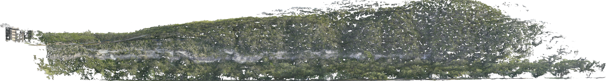
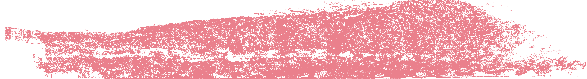

Site context
Top-down map
The survey ortho draped on live satellite imagery — pan and zoom like any web map.

A one-look report of the vegetation on the bluff face — mapped, measured, and reconstructed in 3D from 1,633 aerial photos. Explore it below; nothing to install.
Drag to pan, scroll or use +/− to zoom. Toggle the vegetation layer and the three analysis zones. Yellow lines mark the 604 m reporting section.


Two ways of measuring, both reported: projected = footprint on the vertical face (standard coverage metric); true-surface = actual 3D area, larger because the face and canopy have real relief.
The survey ortho draped on live satellite imagery — pan and zoom like any web map.
Every deliverable is here — open it in your browser, or download the file. The two large rasters are delivered separately (they exceed browser limits); ask and we'll share them.
1,633 photos were aligned into one 3D model (98.2% aligned); from it we built the elevation ortho, classified vegetation as everything that is not exposed pale limestone, and measured area per zone. Zones and the 604 m section were placed by the reviewer.